Primeira Barra
Este robô tem característica de day trade e opera o rompimento da primeira barra do dia no tempo gráfico escolhido pelo usuário.
Pode operar tanto na compra quanto na venda, seguindo o sentido do rompimento das máximas ou mínimas da primeira barra observada.
Seu funcionamento pode ser condicionado à existência de um gap de abertura, buscando operação no fechamento do gap ou apostando na continuação do movimento inicial.
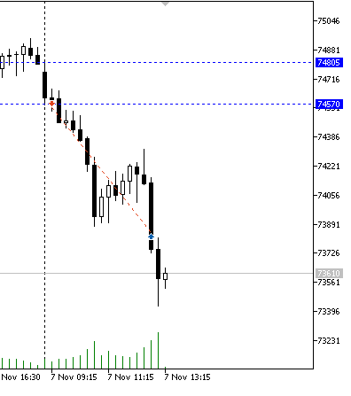
AMKA
Robô que usa o indicador AMKA, indicador que é baseado em médias móveis adaptativas, com fatores de suavização. O indicador AMKA gera sinais de compra e venda que são seguidos pelo robô.
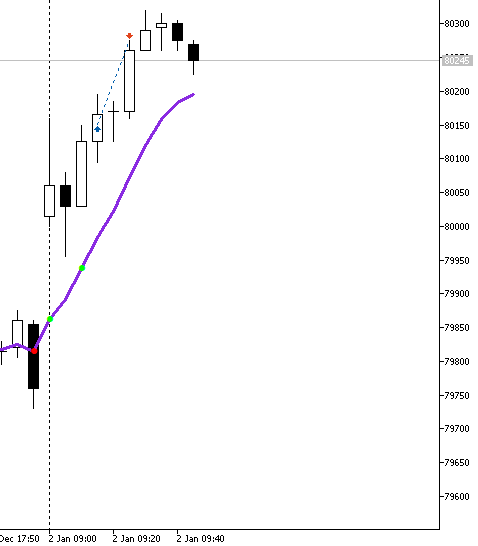
Bollinger
Este robô pode operar tanto em day trade como também no swing trade e tem como base o indicador Bandas de Bollinger.
No setup clássico, o robô busca operações de retorno à média, após um fechamento fora ou simplesmente um toque nas bandas superior e inferior.
Pode ser usado também como seguidor de tendência, observando a banda virada a favor da tendência e operando o rompimento destes limites.
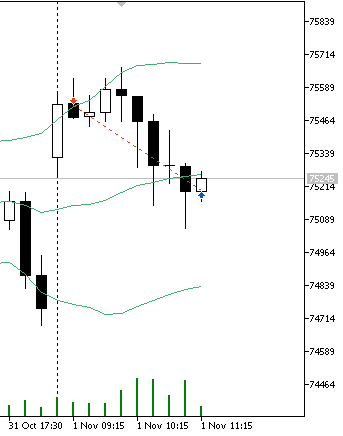
CCI + MA
O Robô é baseado no indicador CCI (Commodity Channel Index) em conjunto com uma média móvel do próprio indicador. O sinal de compra ou venda é dado quando o CCI cruza a sua média móvel além de um dos limites de sobrecompra ou sobrevenda, entrando no sentido de retorno à média.
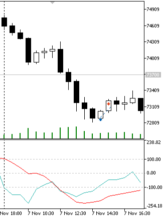
CTOD
Também um robô para day trade, o CTOD (Critical Time of the Day) é baseado em uma estratégia apresentada pelo trader Jake Bernstein. O setup original definido por Jake consistia em monitorar a primeira hora de operação do mercado e marcar os preços de fechamento de cada candle de 5 minutos. Após este período, deveria ser marcado o maior e menor preço de fechamento e operar o rompimento dos mesmos.
Este robô foi adaptado para permitir tanto a monitoração dos preços de fechamento quando as máximas e mínimas dos candles, para determinação do range de interesse. Pode-se também ignorar um número de barras iniciais para se considerar apenas um período de tempo específico, desprezando por exemplo os primeiros candles do dia que tendem a ser mais voláteis.
A imagem abaixo mostra o setup configurado para ignorar a primeira barra e considerar como limites os fechamentos das próximas duas barras, entrando no rompimento da máxima ou mínima encontrada.
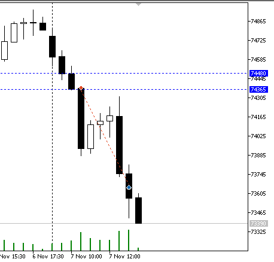
Dunnigan
Este setup usa os conceitos definidos por William Dunnigan no que diz respeito ao início de um movimento de alta ou baixa, que pode ser identificado, respectivamente, por uma up bar ou down bar. Uma up bar é composta por uma barra com a máxima maior que a máxima anterior e também a mínima maior que a mínima anterior. Já uma down bar é caracterizada por ter a máxima menor que a máxima da barra anterior, e a mínima mais baixa que a mínima anterior. Em ambos os casos, a cor do candle (abertura – fechamento) é indiferente. O robô pode ser configurado para ignorar gaps, e operar apenas barras que não superem totalmente a barra anterior. Esta estratégia pode ser aplicada tanto para day trade como também para swing trade.
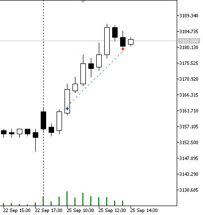
Engulfing
O robô de engolfo busca este padrão de candlesticks no gráfico e faz a entrada logo no fechamento do candle de engolfo acompanhando a indicação de alta ou baixa. O engolfo de alta (bullish engulfing) é caracterizado por um par de candles onde o corpo (diferença entre abertura e fechamento) do segundo envolve completamente o corpo do primeiro, sendo o primeiro candle baixista e o segundo de alta. Já o engolfo de baixa (bearish engulfing) é caracterizado pelo padrão ao inverso, ainda com o corpo do segundo candle envolvendo o primeiro, mas sendo este de alta e o segundo de baixa.
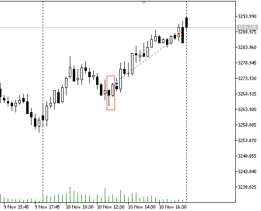
Equity Control
O Equity Control é um robô auxiliar para proteção do saldo na conta de negociação. Podem ser definidos no robô limites diários, semanais e mensais de ganho e perda. Quando os limites forem atingidos, o Equity Control pode ser configurado para fechar todas as posições e ordens abertas por Expert Advisors e, opcionalmente, desabilitar a negociação automatizada para o terminal. Outro modo de operação é apenas informar aos demais robôs da RobotCrowd que o limite global foi atingido e cada robô se encarrega de fechar suas operações.
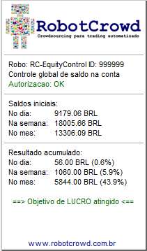
Filtros
Os filtros disponíveis nos robôs nada mais são que um conjunto de indicadores e regras que habilitam uma compra ou venda de acordo com determinado setup. A ideia deste robô é usar apenas a combinação destas regras para definir o ponto de compra ou venda de um ativo. Isso possibilita uma forma fácil de configurar robôs baseados em indicadores, bastando escolher a combinação desejada nos parâmetros e observar a execução dos trades.
No exemplo abaixo, foram parametrizados um dos filtros de média móvel exponencial com período 17 e as linhas de Phibo PC/PV. A entrada é realizada quando o preço fecha acima da média móvel de 17 e também está acima das linhas Phibo PV 1 (72) e Phibo PV 2 (305).
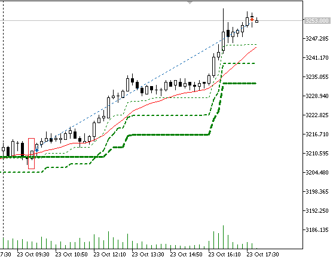
Gaps
Este robô busca operações de acordo com os gaps de abertura no mercado. Pode ser configurado para operar em sentido contrário ao gap (fechamento), a favor do gap (continuação), ou ambos. Pode ser definido um tamanho mínimo de gap para filtrar as diferenças de abertura menos importantes. Esta é uma estratégia de day trade.
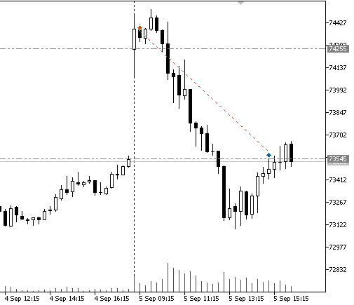
GLPhibo
Este robô implementa uma abordagem para entrada automatizada em trades do tipo Gradiente Linear, conforme definido por Su Choung Wei. É utilizado como base o indicador Phibo, criado por Bo Williams, que mostra níveis de suporte e resistência dados pelos percentuais de Fibonacci. A ideia é que entre esses níveis possa haver algum tipo de consolidação, que o robô tenta explorar.
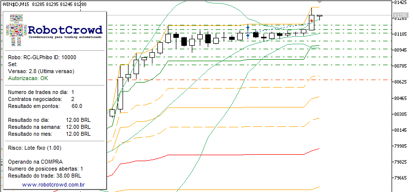
GLPriceAction
Robô que implementa abordagem para entrada automatizada em trades do tipo Gradiente Linear, conforme definido por Su Choung Wei, baseado em padrões de Price Action. A ideia é usar o robô em conjunto com os filtros disponíveis para encontrar os melhores momentos de entrada nas operações.
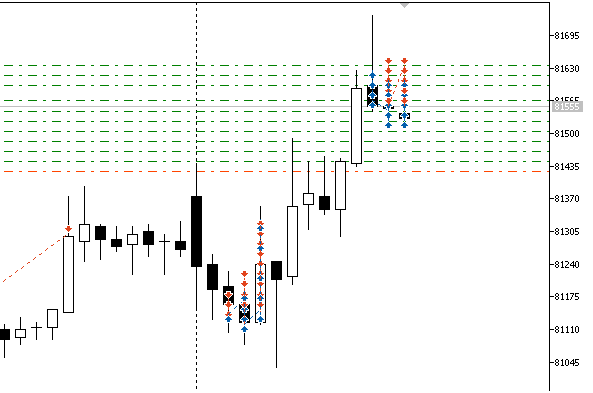
GLVolatilityBands
Robô que implementa abordagem para entrada automatizada em trades do tipo Gradiente Linear, conforme definido por Su Choung Wei, baseado em um indicador de afastamento de média móvel, que forma um canal de volatilidade. As bandas do indicador podem ser compostas por distância fixa, ATR e desvio padrão de forma a acomodar melhor as oscilações normais do mercado.
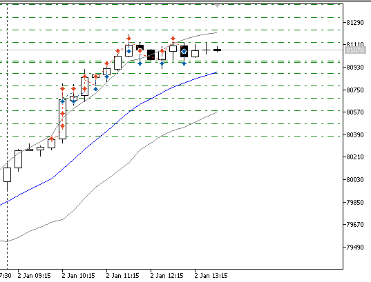
Gradiente Linear
Esta estratégia foi apresentada por Su Choung Wei, e consiste em operar em momentos de consolidação aproveitando a volatilidade do mercado, abrindo diversos trades com alvos curtos enquanto os preços oscilam para cima ou para baixo em uma determinada faixa. O robô insere todas as ordens pendentes do tipo limitadas e acompanha a execução das mesmas, colocando uma ordem oposta sempre que um dos níveis é atingido. Esta versão do robô não tem uma estratégia automatizada de entrada, e dessa forma, o início de operação deste robô deve ser feito manualmente usando uma mini-boleta com botões que permitem o controle manual das operações.
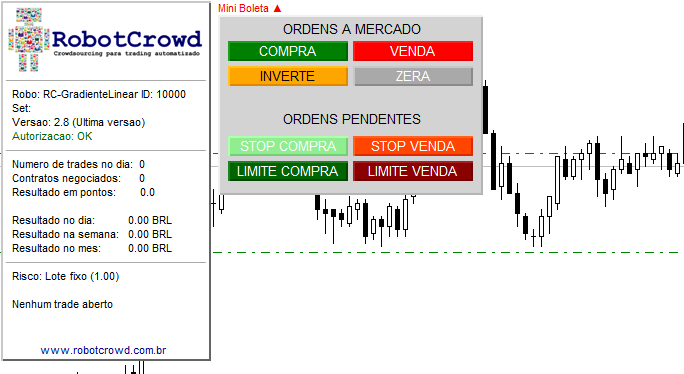
IFR
Robô baseado no indicador IFR (Indice de Força Relativa). Pode operar tanto na busca de correções como na confirmação de tendência. No primeiro caso, as operações de compra são abertas após um fechamento abaixo do nível sobrevendido, enquando as de venda são inicados quando um candle fecha acima do nível sobrecomprado. A saída do trade pode ser no retorno a uma média móvel, no nível oposto, ou conforme definição de objetivo nos ajustes. O segundo tipo de operação busca aproveitar a força relativa do mercado. As operações são iniciadas quando o preço sai da região de sobrecompra (para venda) ou da região de sobrevenda (para compra). Os percentuais de sobrecompra e sobrevenda são configuráveis, bem como o período de cálculo do IFR.
A imagem abaixo mostra a operação de um IFR 2, com limites 5% e 95%, e saída no cruzamento da média móvel simples de 7 períodos.

Inside Day Breakout
O padrão Inside Day é observado quando toda a variação de preços de um dia está contida entre a máxima e mínima do dia anterior. Isso pode indicar uma indecisão no mercado, já que não foi possível romper os limites do dia anterior. A ideia é quando houver o rompimento o movimento pode ser mais forte, indicando uma tomada de decisão dos participantes do mercado.
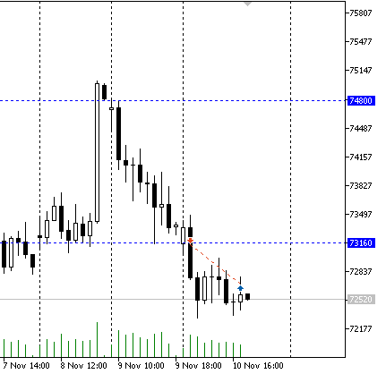
Last Day Breakout
Este robô opera o rompimento das máximas e mínimas do dia anterior, buscando tirar proveito de uma tendência mais longa
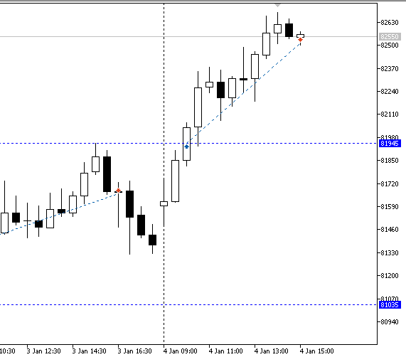
Rompimento da Linha D’Água
É chamada linha d’água aquela que passa pelo preço de fechamento do dia anterior. A ideia do setup é que, após uma abertura em gap, se o preço ultrapassar a linha d’água, consequentemente fechando o gap de abertura, o ativo tende a continuar o movimento que provocou o rompimento desta linha. O robô tenta capturar este comportamento do mercado, montando uma operação de day trade.
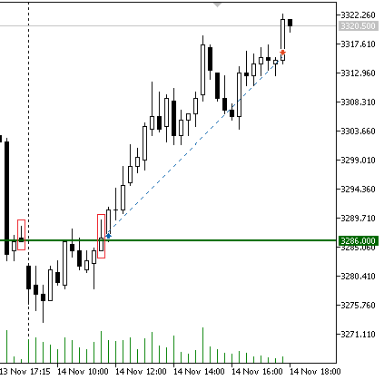
MAC
O MAC (Moving Average Channel) é formado por um par de médias móveis, uma das máximas e outra das mínimas. Quando o canal está inclinado para cima e os preços estão acima do canal, uma tendência de alta é confirmada. Da mesma forma, quando o canal está voltado para baixo e os preços são negociados abaixo do canal, temos uma tendência de baixa. Este robô aguarda a ocorrência de dois candles totalmente acima ou abaixo do canal para a confirmação da tendência, fazendo a entrada no rompimento da máxima ou mínima do segundo candle.
Pode ser usado também com uma entrada secundária caso os preços voltem até o canal indicando um repique e teste das médias móveis.
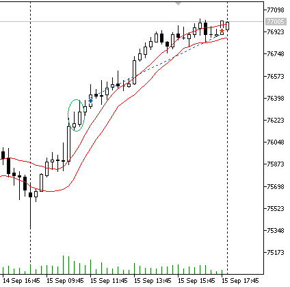
MasterTrend
Este robô opera sinais dados pelo indicador de tendência MasterTrend, disponibilizado na comunidade, que tem por objetivo apresentar as tendências de forma mais estável, sem muitas sinalizações de inversão de tendência. O robô pode operar mudanças na cor do indicador, retorno até a linha, ou apenas a posição relativa dos preços em relação à linha.
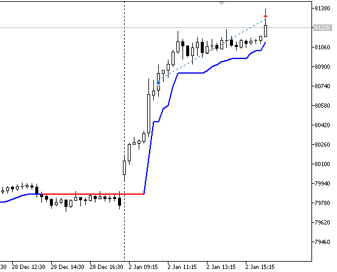
Mean Reversal
Robô que busca operações de retorno à media após os preços distanciarem da mesma por um afastamento pré-definido. Este afastamento pode ser composto por uma combinação de valor fixo, proporção do ATR e também desvio padrão dos preços.
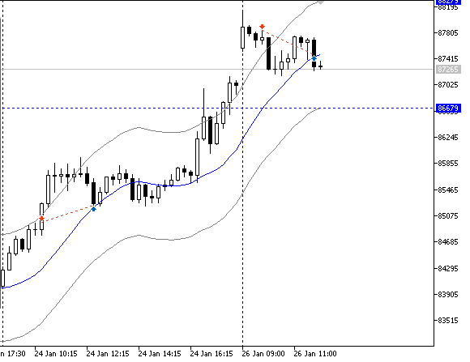
Cruzamento de Médias
A estratégia do cruzamento de médias é uma das mais conhecidas no mercado. Neste caso são utilizadas duas médias móveis, uma de período menor (rápida) e outra de período maior (lenta). Quando a média rápida cruza a média lenta para cima ou para baixo, tem-se uma indicação de mudança na tendência, e o robô baseado nesta estratégia inicia a operação no rompimento da máxima ou mínima do candle onde houve o cruzamento. Caso o ponto de entrada não seja superado, o mesmo é ajustado para a máxima ou mínima do próximo candle.
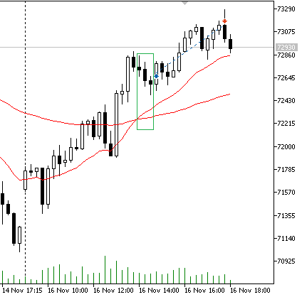
MME
Este robô também usa um setup bastante conhecido, que consiste em observar a virada da média móvel exponencial e entrar na superação do candle onde ocorreu a virada. Uma das configurações mais famosas é a MME 9, mas este robô pode operar com qualquer tipo de média móvel e qualquer período pode ser configurado.
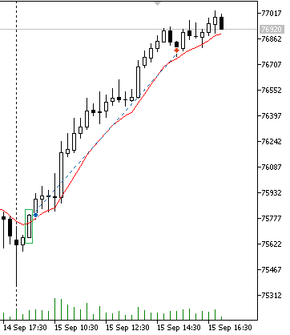
Oops
Este setup foi criado por Larry Williams, e também busca operações com a ocorrência de gaps de abertura. Nesta estratégia, observa-se se a abertura do dia ocorreu com um gap acima da máxima do dia anterior, ou abaixo da mínima do dia anterior, o que sugeriria um movimento forte já na abertura. Contudo, caso o mercado recue na direção contrária ao gap, chegando até a máxima ou mínima do dia anterior, uma entrada é feita buscando um movimento no sentido contrário. O setup é chamado de Oops porque pode indicar o entendimento por parte dos traders que eles estavam errados na suposição inicial do movimento do mercado e tenderiam a encerrar ou inverter as posições montadas na abertura.
Pode ser definido o tamanho mínimo do gap a ser operado por esta estratégia.
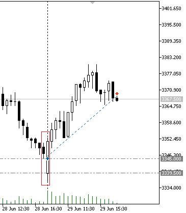
Phibo PC/PV
Este robô opera o retorno até as linhas verdes e vermelhas do indicador Phibo-PCPV, criado por Bo Williams. O robô possui uma configuração independente de volume para cada linha, sendo que um volume zero indica que o nível não deverá ser usado. Após a entrada na primeira linha o robô fará acréscimos de posição nas linhas subsequentes, se configuradas com volume.
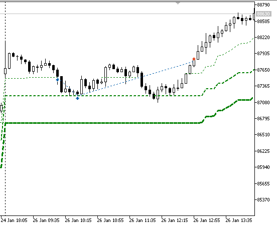
Pivot Breakout
Movimentos de alta e baixa muitas vezes apresentam a característica de pivôs, ou movimentos com ondas 1-2-3. A ideia deste robô é comprar o rompimento do último topo ou vender a perda do último fundo, apostando na continuação da tendência.
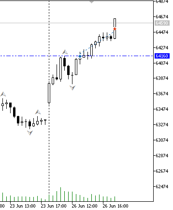
Ponto Contínuo
Esta estratégia, apresentada por Alexandre Wolwacz (Stormer), busca a entrada em operações em tendência após uma correção até uma média móvel. Na configuração sugerida, utiliza-se uma média móvel aritmética de 20 períodos e, após os preços estarem variando acima ou abaixo da média, quando for observado um toque na média móvel deve-se fazer a entrada no rompimento da máxima ou mínima do candle que encostou na média.
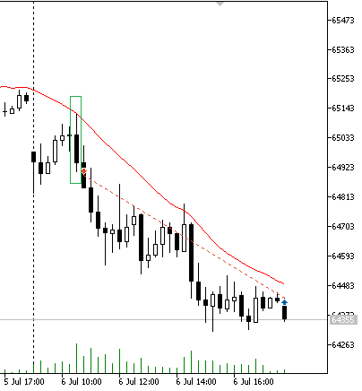
RAFI
O robô usa como base o indicador RAFI, criado por Raphael Figueredo, que mostra a força nos rompimentos e sinaliza no gráfico colorindo os candles de verde para alta e vermelho para baixa. Nestas condições o valor do indicador RAFI é maior que 2.5, indicando força no movimento.
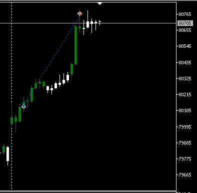
Realização Frustrada
Este setup, também apresentado pelo Stormer, busca uma sequencia de três candles que representam a frustação dos traders em prever a movimentação dos preços. Em uma tendência de alta, o padrão é formato por uma sequência de baixa-alta-baixa, e a entrada ocorre no rompimento da máxima destes três candles. Já em uma tendência de baixa, a sequência é invertida: alta-baixa-alta, com entrada na perda da mínima das três barras. A ideia do setup é que na primeira barra alguns traders apostam na reversão da tendência, na segunda a tendência continua e os traders ficam preocupados, enquanto que na terceira acreditam que estavam certos e aumentam a aposta. Quando o mercado faz o movimento contrário e continua a tendência, são obrigados a encerrar as posições e o rompimento tende a apresentar força.
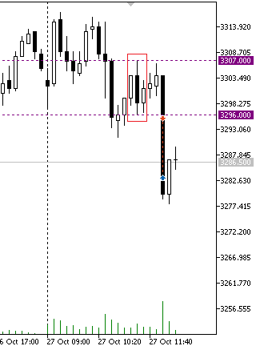
Shadow Line
Este robô é baseado na estratégia criada por Larry Williams que consiste em plotar no gráfico uma média móvel e a mesma média deslocada um número de períodos para frente. Quando a média cruza a sua sombra (média deslocada) pode indicar a mudança de tendência ou o início de um movimento mais longo.
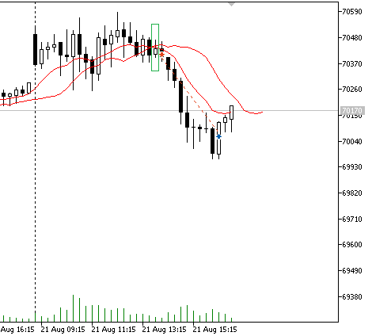
Stochastic
O robô usa o indicador estocástico para determinação dos pontos de compra e venda. Pode operar em dois modos, sendo o primeiro mais clássico, buscando o retorno à média a partir dos pontos de sobrecompra e sobrevenda. O segundo modo tenta entrar a favor da tendência ao cruzar as linhas de sobrecompra ou sobrevenda, seguindo uma estratégia chamada de “Stochastic Pop”, por Jake Bernstein. Este último modo de operação é representado pela figura abaixo.

SuperTrend
Este robô opera sinais dados pelo indicador de tendência SuperTrend. O robô pode operar mudanças na sinalização de tendência do indicador, retorno até a linha, ou apenas a posição relativa dos preços em relação à linha.
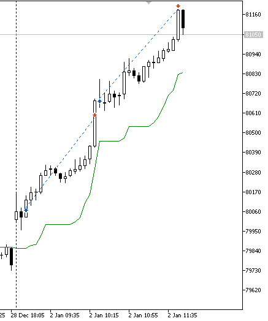
Three Bar Reversal
Este setup busca padrões formados por três candles que podem indicar a reversão de tendência. Para compra, o padrão é formado pelo primeiro candle de baixa, o segundo com mínima menor que o primeiro, e o último fechando preferencialmente com acima das máximas dos dois candles anteriores. Já para venda a combinação é na direção oposta: primeiro candle de alta, máxima do segundo maior que o anterior, e fechamento do terceiro abaixo das mínimas.
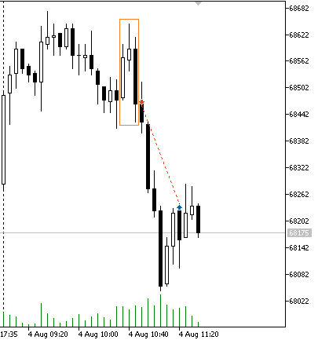
Turtle Trader
Este robô é baseado na estratégia seguidora de tendência utilizada pelo grupo de traders aprendizes, chamados de Turtle Traders, treinados por Richard Dennis e William Eckhardt. Basicamente, o sistema prevê a entrada em operações de compra após o rompimento da máxima de um número configurável de barras, e da mesma forma a entrada na ponta vendedora se perder a mínima das últimas barras consideradas.
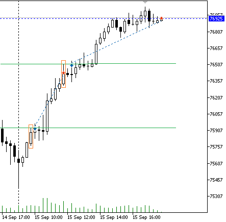
Volatility Breakout
O setup de rompimento de volatilidade foi apresentado por Larry Williams, e também é adotado por diversos traders buscam operações de rompimento. Esta estratégia prevê a entrada na operação quando os preços ultrapassam a volatilidade média, e tendem a manter a direção do movimento. A volatilidade pode ser medida de diversas formas, como diferença entre máxima e fechamento, mínima e fechamento, máximas e mínimas, ATR (Average True Range), desvio padrão, e também o GSV (Greatest Swing Value, conforme definido por Williams). A volatilidade também pode ser determinada em período diário, buscando o rompimento a partir da abertura do dia, ou calculada nas barras no intraday, que permite operações de rompimento de consolidações menores de preços no intraday.